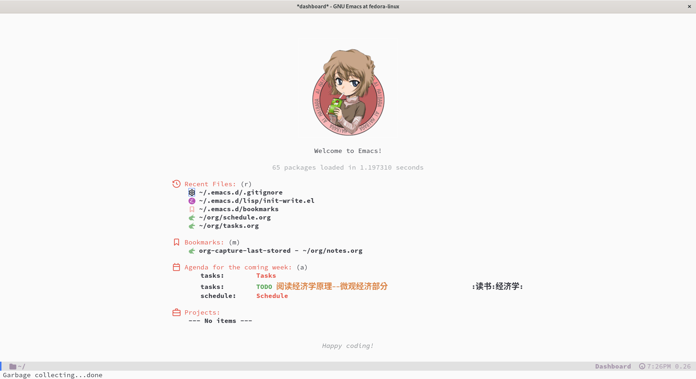

Coolemacs
这是我的 Emacs 配置。该配置最主要的功能是使用 Org-mode 来组织任务和日程安排，此外也包含了常用的插件和功能，帮助提高开发效率。另外，该配置只使用了 use-package 来管理插件。因此，容易下载依赖，方便配置。

1. 主要特性
- 代码补全 ：在
org-mode和prog-mode下启用自动补全。 - Emacs 配色 ：根据个人喜好进行的主题和配色设置，提升界面美观度。
- Dashboard ：使用
dashboard插件提供启动界面，显示常用文件和任务。 - Org-mode 时间管理 ：使用 Org-mode 来管理日常任务、时间记录与统计。
- 插件管理 ：使用
use-package来配置插件，简化插件管理和加载。
2. 环境依赖
- Emacs 29 或更高版本
- GNU/Linux 操作系统
3. 配置文件说明
- init.el ：主配置文件，加载插件和初始化必要功能。
- lisp/ ：具体的配置文件。
4. 安装步骤
- 安装 Emacs 29 或更高版本。可以通过
sudo dnf install emacs安装。 - 将仓库克隆到本地
git clone https://github.com/Elonisme/Coolemacs.git ~/.emacs.d
- 配置完毕后，可以使用
org-capture来快速添加任务，org-agenda来查看日程安排。
5. 主要插件
- use-package ：简化插件管理，自动加载和配置插件。
- dashboard ：提供一个友好的启动界面。
- org-mode ：用于任务管理、日程安排以及时间跟踪。
- corfu ：提供代码自动补全，提升编程效率。
6. 功能配置
1. 代码补全
使用 corfu 自动补全，确保编写文档和编程时有良好的支持。
(use-package corfu
:ensure t
:custom
(corfu-auto t)
(corfu-auto-prefix 2)
(corfu-preview-current nil)
(corfu-auto-delay 0.2)
(corfu-popupinfo-delay '(0.4 . 0.2))
:custom-face
(corfu-border ((t (:inherit region :background unspecified))))
:bind ("M-/" . completion-at-point)
:hook ((after-init . global-corfu-mode)
(global-corfu-mode . corfu-popupinfo-mode)))
(unless (display-graphic-p)
(use-package corfu-terminal
:ensure t
:hook (global-corfu-mode . corfu-terminal-mode)))
2. 任务提醒
使用 org-alert 插件设置任务提醒，确保不会忘记重要事项。
(use-package org-alert :ensure t :config (setq alert-default-style 'libnotify) (setq org-alert-interval 3000) ;; 每 30 分钟检查一次 (org-alert-enable))
3. 时间管理
使用 org-clock 记录每个任务的时间，并生成报告查看时间使用情况。
(use-package org-clock :ensure t :config (setq org-clock-persist 'history) (org-clock-persistence-insinuate))
4. Emacs 启动界面
使用 dashboard 插件提供一个美观的启动界面，显示常用文件和任务。
(use-package dashboard
:ensure t
:config
(dashboard-setup-startup-hook) ;; 启动时显示 dashboard
(setq dashboard-banner-logo-title "Welcome to Emacs!"
dashboard-startup-banner "~/.emacs.d/logo.png" ;; 可以选择 logo 图片路径
dashboard-center-content t
dashboard-vertically-center-content t
dashboard-items '((recents . 5) ;; 最近打开的文件
(bookmarks . 5) ;; 书签
(agenda . 5) ;; agenda
(projects . 5)) ;; 最近的项目
)
(setq dashboard-display-icons-p t) ; display icons on both GUI and terminal
(setq dashboard-icon-type 'nerd-icons) ; use `nerd-icons' package
(setq dashboard-set-heading-icons t)
(setq dashboard-set-file-icons t)
(dashboard-modify-heading-icons '((recents . "nf-oct-history")
(bookmarks . "nf-oct-bookmark")
(agenda . "nf-oct-calendar")
(projects . "nf-oct-briefcase")
(registers . "nf-oct-database")))
(setq dashboard-week-agenda t)
(setq dashboard-filter-agenda-entry 'dashboard-no-filter-agenda)
)
7. 常见问题
Q: 如何更新配置？
- A: 可以直接编辑
init.el文件或者lisp/文件夹下的.el文件，添加新的功能或插件配置。
Q: 如何添加新的任务？
- A: 使用
org-capture来快速记录新任务，可以选择不同的模板来创建任务。
8. 贡献
如果你有任何建议或问题，欢迎提出 issue 或者 PR！